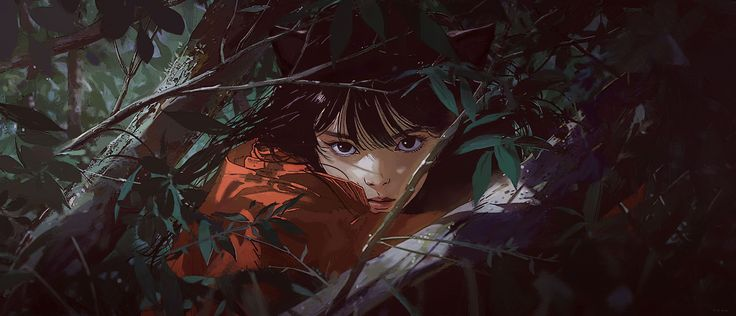

Humanos
Em um mundo hostil e imprevisível, onde apenas os mais adaptados conseguem sobreviver,

os humanos enfrentam uma constante ameaça à sua existência. Dotados de corpos frágeis e vulneráveis, qualquer outra raça do ambiente deste mundo é uma forte opressora para os mesmos, Durante uma era sombria da história, os humanos foram brutalmente oprimidos, tratados como meros servos por espécies mais poderosas e dominantes. Sua liberdade era inexistente, e sua dignidade, constantemente violada.No entanto, a sorte virou quando a sociedade humana alcançou a Revolução Industrial. Esse período marcou um ponto de virada crucial, os humanos passaram a desenvolver tecnologias com velocidade impressionante, impulsionando um crescimento exponencial em diversas áreas. Máquinas complexas e muros colossais foram criados para proteger suas vilas, que viraram cidades, e até verdadeiros países.
Hoje, em busca de segurança e estabilidade, os humanos optam por viver em gigantescas estruturas chamadas "cúpulas", ou mesmo Muros. Essas construções funcionam como cidades autônomas e protegidas, onde a sociedade humana pode prosperar longe das ameaças externas. As cúpulas se tornaram o novo modelo de civilização, abrigando populações inteiras e simbolizando a resistência e a engenhosidade da espécie humana diante de um mundo que, por muito tempo, tentou apagá-la.